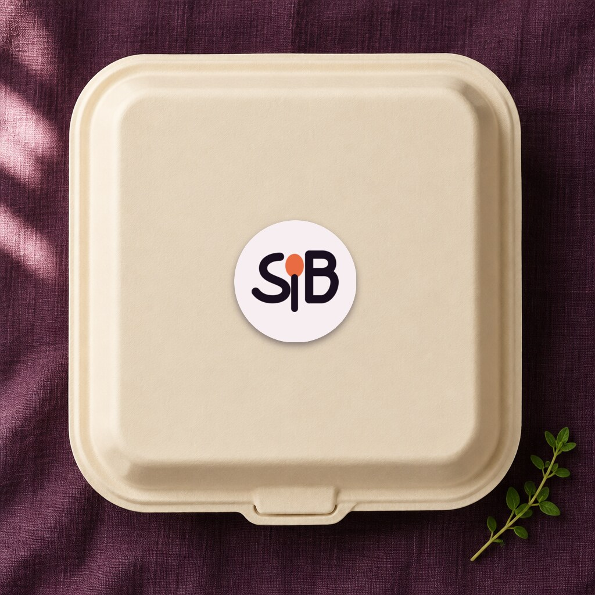

Sarah Bellus. Brand identity, print, website. 2026.
She needed a name people could trust before they tasted anything.
What I did
A serving spoon stands in for the dot of the i. The palette is aubergine and cream with a single orange, taken from the colour of jollof. The same mark then went onto the menu, the food photos and the website.
What I delivered
The SiB monogram in two colourways, a printed menu, food photography treated with the mark, and a one-page website with an enquiry form.
Who it was for: people in the UK booking food for weddings, naming ceremonies, birthdays and church events.


Aubergine
#1A0F1F
Bone
#F6EEF0
Orange
#E86B42
The box and the bag are mock-ups: the mark is mine, the settings are generated.